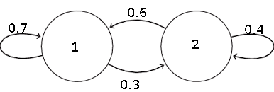
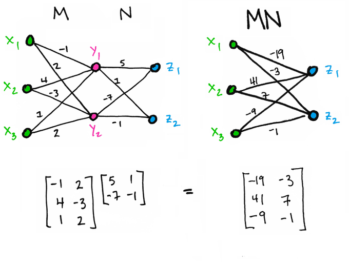

Markov Zincirlerinde (MZ) \(i\) konumundan \(j\) konumuna geçiş olasılığını, \(P_{ij}\) gösterir. Farklı şekile \(P(X_{n+1} = j | X_{n} = i)\) olarak açılabilir. Açılımdan görüleceği üzere bir MZ sonraki adıma geçiş olasılığı için sadece bir önceki adıma bakar. Bu tür önce/sonra yapısındaki iki boyutlu hal, çok rahat bir şekilde matrise çevirilebilir. Önceki konum satırlar, sonraki konum kolonlar olarak temsil edilir mesela.
Örnek
Bir sonraki günde yağmur yağmayacağını bir MZ olarak tasarlayalım [1, sf 196]. Bir sonraki günde yağmur yağmayacağını sadece bugün etkiliyor olsun. Eğer bugün yağmur yağıyorsa yarın yağmur yağması 0.7, eğer bugün yağmıyor ise yarın yağması 0.4. MZ şöyle
\[ P = \left[\begin{array}{cc} 0.7 & 0.3 \\ 0.4 & 0.6 \end{array}\right] \]
Geçiş olasılıklarından bahsettiğimize göre ve elimizde sınırlı / belli sayıda konum (state) olduğu için, bir MZ’nin her satırındaki olasılıkların toplamı tabii ki 1’e eşit olmalıdır.
MZ’lerin ilginç bir özelliği \(n\) adım sonra \(i,j\) geçişinin \(P_{i,j}^n\) hesabıyla yapılabilmesidir. Yani \(P\)’yi \(n\) defa kendisiyle çarpıp \(i,j\) indislerindeki öğeye bakarsak \(n\) adım sonrasını görüyoruz. İspat altta [1, sf. 195].
Bulmak istediğimiz \(n\) adım sonrası geçiş olasılıkları, yani \(i\) adımında olan sürecin \(n\) adım sonra \(j\) adımında olma olasılığı. Aradığımız,
\[ P_{ij}^n = P ( X_{n+k} = j | X_k = i ), \quad n \ge 0, i,j \ge 0 \]
Tabii ki \(P_{ij}^1 = P_{ij}\). Chapman-Kolmogorov denklemleri bu n-adım geçişlerini hesaplamak için bize bir yöntem sağlıyoar. Bu denklemler,
\[ P_{ij}^{n+m} = \sum_{k=0}^{\infty} P_{ik}^n P_{kj}^m, \quad \forall n,m \ge 0, \quad \forall i,j \qquad (1) \]
\(P_{ij}^{n+m}\) formülü şunu söylüyor, \(i\)’de başlayan süreç \(n+m\) geçiş sonrası \(j\)’e varacak, ve geçtiği yol onu \(n\) anında \(k\)’den geçirecek. O zaman tüm bu geçiş noktaları \(k\)’ler üzerinden bir toplam alırsak sürecin \(n+m\) adım sonrası \(j\)’de olma olasılığını elde etmiş oluyoruz.
Formel olarak
\[ P_{ij}^{n+m} = P(X_{n+m} = j | X_0 = i ) \]
söylenmiş oluyor. Üstteki olasılık hesabına / birleşik olasılığa \(k\)’den geçme aksiyonunu ekleyip aynı anda tüm \(k\)’ler üzerinden toplam alırsak (entegre edip çıkartma tekniği -integrate out-) hiçbir şey değiştirmemiş oluruz,
\[ = \sum_{k=0}^{\infty} P(X_{n+m} = j, X_n = k | X_0 = i ) \]
\[ = \sum_{k=0}^{\infty} P(X_{n+m} = j, X_n = k, X_0 = i ) P(X_n=k|X_0=i) \]
Üstteki ifade diyor ki,
\[ P_{ij}^{n+m} = \sum_{k=0}^{\infty} P_{kj}^m P_{ik}^n \]
Ayrıca dikkat edersek (1)’deki tarif
\[ P^{n+m} = P^n \cdot P^m \]
işlemini ima ediyor. Nokta işareti çarpım işlemi, çünkü hatırlarsak matris çarpımının tanımı şöyleydi; elimizde N x M boyutunda \(A\) matrisi var, \(B\) ise M x K boyutunda olsun, her ikisinin \(i\) satırı \(j\) kolonundaki öğesi \(a_{ij}\), \(b_{ij}\) ise, \(A \cdot B\) çarpımı bir N x K matrisidir, bu matrisin \(i,j\) öğesi \(\sum_{k=1}^{M} a_{ik}b_{kj}\) ile verilir. Toplamın üst sınırı sonsuz değil \(M\) fakat sonsuzluk üst sınırı genel bir formül için tanımlanmış zaten.
İlk örneğe dönersek, eğer bugün yağmur yağıyorsa 4 gün sonra yağmur yağma olasılığı nedir?
import numpy.linalg as lin
P = np.array([[0.7,0.3],[0.4,0.6]])
P4 = lin.matrix_power(P,4)
print (P4)[[ 0.5749 0.4251]
[ 0.5668 0.4332]]Aradığımız geçiş için kordinat 0,0’a bakıyoruz ve sonuç 0.5749. Numpy
matrix_power bir matrisi istediğimiz kadar kendisiyle
çarpmamızı sağlıyor.
Durağan Dağılım (Stationary Distribution)
Eğer yağmur örneğindeki matrisi çarpmaya devam edersek, mesela 8 kere kendisiyle çarpsak sonuç ne olurdu?
import numpy.linalg as lin
P = np.array([[0.7,0.3],[0.4,0.6]])
P8 = lin.matrix_power(P,8)
print (P8)[[ 0.57145669 0.42854331]
[ 0.57139108 0.42860892]]Dikkat edilirse, her satır bir değere yaklaşmaya başladı. Bu değer MZ’nin durağan dağılımıdır, belli koşullara uyan her MZ’nin böyle bir durağan dağılımı vardır. Bu koşullar MZ’nin periyodik olmayan (aperiodic) ve tekrar eden (recurrent) olmasıdır. Bu şartlar çok “özel’’ şartlar değildir aslında, daha çok”normal’’ bir MZ’yi tarif ediyor diyebiliriz. Tüm konumları tekrar eden yapmak kolaydır, MZ tek bağlı (singly connected) hale getirilir, yani her konumdan her diğer konuma bir geçiş olur, ve periyodik olmaması için ise MZ’de olmadığı zamanlarda bir konumdan kendisine geçiş sağlanır (az bir gürültü üzerinden).
Neyse, matematiksel olarak durağanlık şu denklemi ortaya çıkartır,
\[ \pi = \pi P \]
Burada durağan dağılım \(\pi\)’dir. Bu denklem tanıdık geliyor mu? Devriğini alarak şöyle gösterelim, belki daha iyi tanınır,
\[ P^T\pi^T = \pi^T \]
Bir şey daha ekleyelim,
\[ P^T\pi^T = 1 \cdot \pi^T \]
Özdeğer/vektör formuna benzemiyor mu? Evet. Bu form,
\[ Ax = \lambda x \]
MZ denklemi şunu söylüyor, 1 değerindeki özdeğere ait özvektör bir MZ’nin durağan dağılımıdır. Bu arada, MZ geçiş matrisi \(P\)’nin en büyük özdeğerinin her zaman 1 olduğunu biliyoruz (çünkü üstteki tarif ettiğimiz özel şartlara sahip olan türden matrisler böyle özdeğerlere sahip olmalı). Bu durumda en büyük özdeğere ait özvektörü hesaplamak yeterli olacaktır. Bunu yapmayı zaten [2]’de öğrenmiştik, üst metot (power method) sayesinde bu hesap kolayca yapılabiliyor.
MZ kavramının ilginç bir uygulaması için [3] yazısına bakılabilir.
Çizitler ve Matrisler
Markov matrisleri kavramını biraz daha ilerletebiliriz. Üstteki Markov örneği için mesela alttaki çizit gösterilebilir,

Örnekteki durumda 1’den başlayınca hangi olasılıkla hangi diğer düğüme atlandığı görülebiliyor. Bu geçiş olasılıklarına göre zar atılıp geçiş yapılabilir. Markov matrisleri bu bağlamda kendi içindeki geçişleri gösteriyor, sürekli 1,2,3,.. düğümleri arasında gidip geliyoruz. 1’den 3’e geçiş için 1’inci satır 3’üncü kolona bakıyoruz, bir sonraki geçiş için \(P^2\)’nin 3’üncü satırına bakıyoruz.
Bu kavramı daha da genişletebiliriz. Bir çizitin katman katman, farklı blokları arasındaki geçişleri de ayrı matris çarpımları olarak gösterebiliriz.

Mesela her X bölümündeki konumlardan Y bölümündeki konumlara geçişleri, oradan Z konumlarına geçişleri matris olarak göstermek mümkün, bu durumda matris çarpımı X ve Z arasındaki tüm geçişlerin bir toplamı haline gelir, tüm mümkün gidiş yollarının ağırlığını bu çarpımda görebiliriz. Üstteki örnekte mesela her geçiş bir olasılık hesabı taşıyabilirdi, o zaman \(M \cdot N\) çarpımında her Z konumuna herhangi bir X konumundan varma olasılığını taşırdı. Ya da tüm bir Z konumuna varma olasılığı en fazla olan X başlangıcını bu matriste görebilirdik.
Bu tür bir yaklaşımın kullanma alanı geniştir. Mesela her katmanda farklı karar seçenekleri, olasılıkları olabilir, ve ara katmanlar binlerce, milyonlarca seçimi içerebilir. Fakat zincirleme bir matris çarpımı ile o tüm ara katmanların toplamını almış oluyoruz, ve elimizde üstteki başlangıç ve bitiş için 3 x 2 boyutunda bir matris kalıyor.
Kaynaklar
[1] Ross, Introduction to Probability Models, 10th Ed
[2] Bayramlı, Lineer Cebir, Ders 21
[3] Bayramlı, Lineer Cebir, Google Nasıl İşler?
[4] Math3ma, https://www.math3ma.com/blog/matrices-probability-graphs